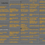
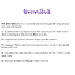
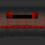
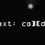
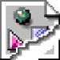

| ARCHIVES 2001 | |
Michael Joyce |
|
|  | Joe Amato gasoline all over/ the carpet/ furniture, even/ our genitals |
Martha Conway I was told to distance myself from my family. |
|
|  | Adrienne Eisen "That was nice. Was there blood?" |
|  | mez /me had to stop for a second (just a second!). |
|  | mez |
|  | Noah Wardrip-Fruin, a.c.chapman, Brion Moss, Hypermedia and Eternal Life. |
Jeff Parker The next morning was bath day. |
|
Issues 1999-2001 edited by Brian Lennon |
|